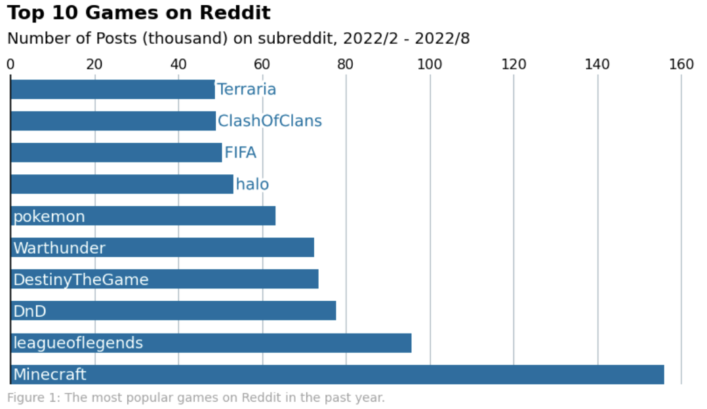
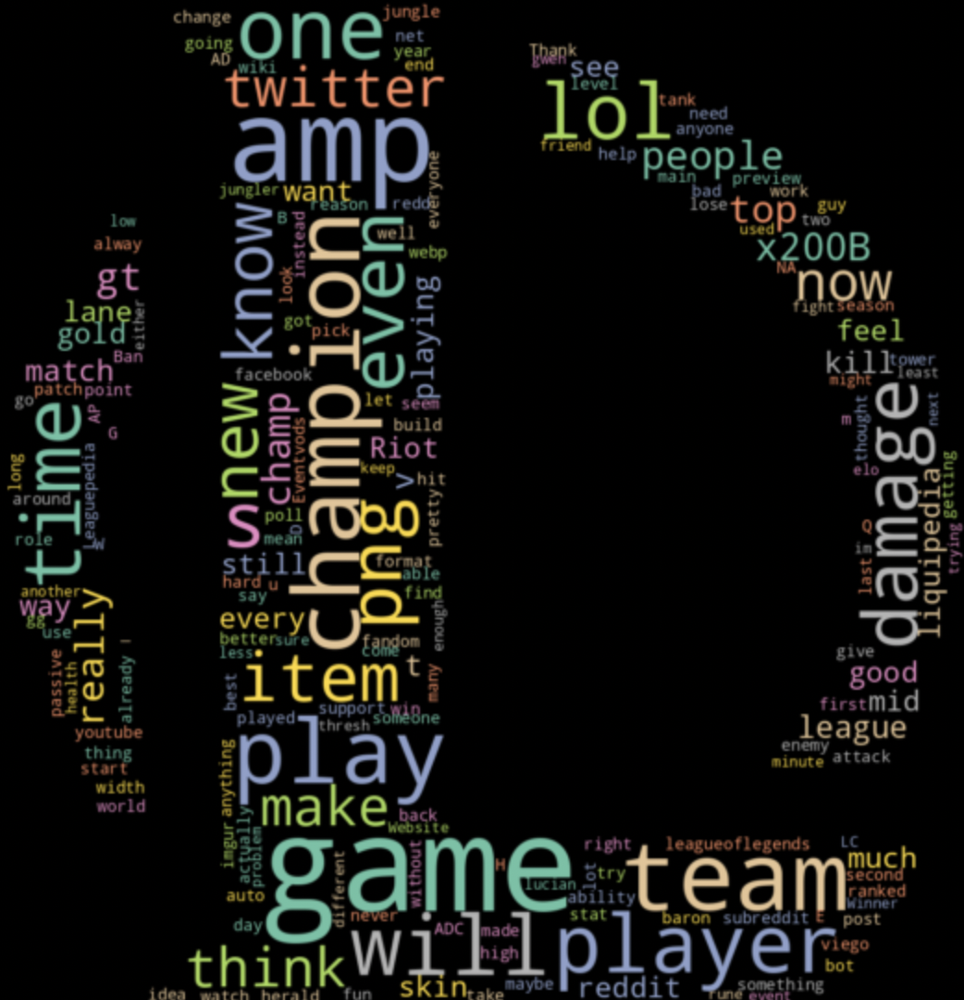
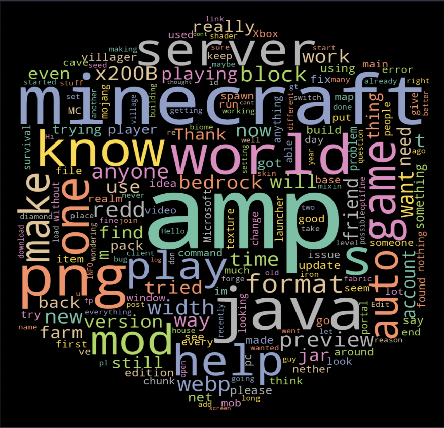
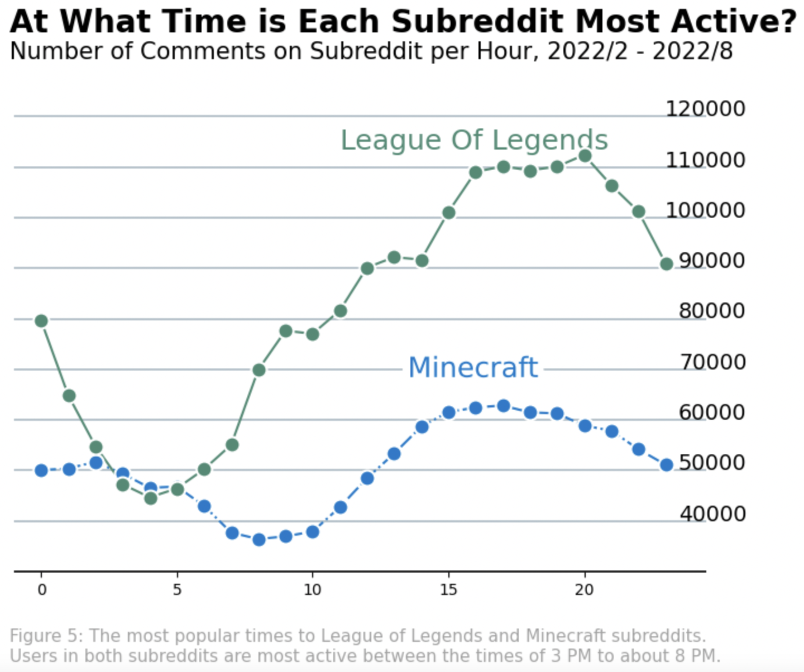
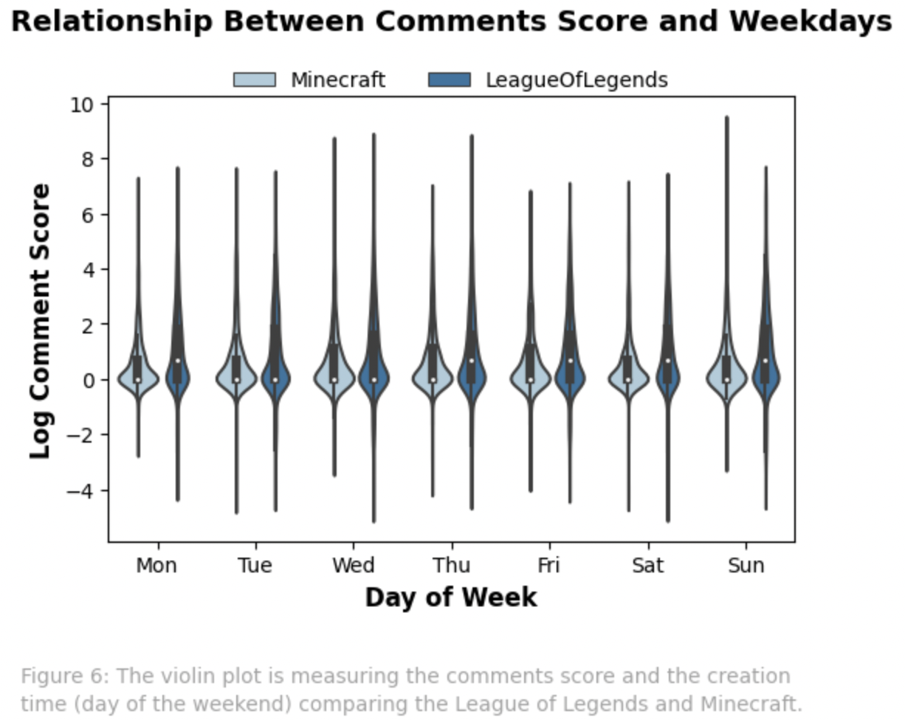

The Exploratory Data Analysis contains different ways to explore Reddit posts, both submissions and commands. On this page, we tried to find the most popular topics related to games and got some basic information regarding the different columns of the dataset. For example, the top 10 games, sensitive situations, most common words, the time each subreddit is most active, comments score over creation time, and other summary tables.
The Reddit dataset contains Reddit posts from 2021/01/01 to 2022/08/31. Since the data has timeliness, we only selected half-year data for Exploratory Data Analysis. The EDA part can solve half questions in the introduction section. On the other hand, the score is one of the most critical elements in Reddit to judge if people like or dislike the post. There are many tables/plots related to scores in this tab. This information helps us to check if any other elements influence the score value in Reddit. At the end of this part, we selected and prepared proper data columns for further analysis.
For selecting the most popular games, we find all game tags on the Reddit official website: https://www.reddit.com/r/gaming/wiki/list-sorted-by-subscribers/. After saving all game names into a list, count the number of subreddits on the submission dataset and choose the top 10 games from the subreddits.
The graph stands for the top 10 games with the highest count of posts on Reddit in the past 180 days. The x-axis stands for a count of posts; the y-axis stands for the names of games. We will select two games from this work. At first, we wanted to get one online game and one single game. However, there are no single games in the top 10 games list. Finally, we chose a competitive game, league of legends, and another cooperative game Minecraft.
Another external data is using the Youtube API. By precisely the date of video was created, we get the total count of videos staged by each game, league of legends, and Minecraft. The table collects the data for the past one day, three days, one week, and one month. This table indicates the relationship between these subreddits and social media(Youtube). Minecraft has higher posts and popularity on Youtube than league of legends. It is nearly three times the total count.
| Name | 1 day | 3 days | 1 week | 1 month |
|---|---|---|---|---|
| League of Legends | 7599 | 21139 | 34829 | 188043 |
| Minecraft | 50879 | 80688 | 148639 | 342650 |
This is a pie chart to present if the submitted content is suitable for people who age under 18. The ‘gamename_health’ stands for posts in this game that are suitable for people under 18. We want to use this information to analyze if these top 10 games are suitable for teenagers. From this pie chart, we can see the over-18 content is just a very small part compared to the total post. We can hardly see these over-18 contents in the pie chart. It is less than 1% for each game. We may judge these top 10 games do not have too much negative impact on teenagers.
Figure2: How many posts contain over-18 tag in each game subreddits
There are two-word cloud plots from league of legends and Minecraft. The plots remove some meaningless words like ‘HTTPS’, ‘mt’. There are some submission posts whose body text has been deleted or removed, so we set ‘deleted’ and ‘removed’ as the stopword to ignore them. We can see these two-word clouds are pretty similar. League of legends discusses more ‘champion’ and ‘damage’. Minecraft concentrates on ‘server’ and ‘help’ which make sense for a cooperative game.
| 
Figure3: WordCloud for league of legends |

Figure4: WordCloud for minecraft |
We know that there are times in the day when more/fewer people are online. The above line plot shows the number of comments and the creation time (hour of a day) to inform the question of what time of day is each subreddit most active. The x-axis of the plot is the hour of the day, and the y-axis is the number of comments. We can find that peak hours for both subreddits are between the times of 3 PM to about 8 PM.
The violin plot measures the comments score and the creation time(different days of the weekend), comparing the League of Legends and Minecraft. The creation time is split into different days on the weekend, such as Monday, Tuesday, Wednesday, Thursday, etc. Since the comment score has an extensive range, which means League of Legends and Minecraft have many hot posts, we use log transformation to show the results. The plot shows the difference between the two games and the difference between each day of the week. From the graph, League of Legends will have more comments with a very high score. Even though there is very little difference between League of Legends and Minecraft on the graph, it has ten times higher scores for each step. The League of Legend comments is also more polarizing than Minecraft. However, Minecraft will have more concentrated comments in the middle areas, which means there are only a few high or low-score comments. Given the data on different weekdays, we can see no difference between the day of the week and the comments score for both League of Legends and Minecraft.
This is a summary table for scores in the top 10 games. A submission's score is simply the number of upvotes minus the number of downvotes. From the summary table, we can see the median is close to 3. The minimum value is zero for all games. This may mean even if the downvotes are more than the upvotes, they will not be counted as a negative value in the submission score. However, some subreddits have a high max score which is more than 700,000. This means there exist some posts that got many upvotes in their subreddit area.
| Subreddit | Mean_Score | Min_Score | Q25 | Median | Q75 | Max_Score | Total_Number |
|---|---|---|---|---|---|---|---|
| Terraria | 180.66 | 0 | 1.0 | 3.0 | 14.0 | 55099 | 170589 |
| Minecraft | 191.69 | 0 | 1.0 | 2.0 | 8.0 | 123524 | 765080 |
| FIFA | 18.02 | 0 | 1.0 | 1.0 | 2.0 | 11784 | 276038 |
| DestinyTheGame | 70.33 | 0 | 0.0 | 1.0 | 2.0 | 44038 | 291297 |
| Pokemon | 185.01 | 0 | 1.0 | 1.0 | 15.0 | 77086 | 267509 |
| Halo | 125.32 | 0 | 1.0 | 2.0 | 10.0 | 57164 | 310928 |
| DnD | 109.49 | 0 | 1.0 | 2.0 | 5.0 | 62959 | 245845 |
| LeagueofLegends | 102.02 | 0 | 1.0 | 3.0 | 17.0 | 83074 | 392085 |
| Warthunder | 94.26 | 0 | 1.0 | 3.0 | 17.0 | 15556 | 221689 |
| ClassOfClans | 54.08 | 0 | 1.0 | 1.0 | 4.0 | 11703 | 157003 |
This is a table that counts post scores for age-sensitive content in different game subreddits. We choose the average score to present the score situation based on the column ‘over-18’. It is interesting that different games have different situations. Games like DestinyTheGame and Fifa have similar scores in both over-18 content or not. Minecraft has a higher score value with no age-sensitive content. Some games like Terraria will have much higher scores with over-18 content. This may depend on the game type, Terraria is more closely related to Splatter. The player may like to discuss age-sensitive content on Reddit.
TThis table is pretty normal and indicates the newest post date and latest post date for our dataset. Since data always has timeliness, it is important to know the time range for the dataset. From this table, we choose the top 10 games based on the posts from the past 180 days.
| Newest_date | Latest_date |
|---|---|
| 2022-08-31 23:59:59 | 2021-01-01 00:00:00 |
This table shows the number of posts that talked about league of legends and Minecraft in the gaming subreddit. We extract this information using regular expressions from the content in the post. One can observe that the fraction is extremely low (25:100000). Considering the size of the league of legends and Minecraft subreddits, we can conclude that users tend to post related content to more specific subreddit (e.g. r/minecraft rather than r/gaming).
| Number of Posts that mentioned Leagues/Minecraft | Number of Posts that didn't mention Leagues/Minecraft |
|---|---|
| 25 | 100,797 |
Given the created_utc which is the time in the database and created a new column that shows the transformed data format YY-MM-DD HH:MM:SS, and then extract the hour from DateTime.
| created_utc | score | submission_created_date | hour |
|---|---|---|---|
| 1624440727 | 0 | 2021-06-23 09:32:07 | 9 |
| 1613926972 | 1 | 2021-02-21 17:02:52 | 17 |
| 1614011946 | 1 | 2021-02-22 16:39:06 | 16 |
| 1613922582 | 1 | 2021-02-21 15:49:42 | 15 |
| 1617126111 | 1 | 2021-03-30 17:41:51 | 17 |
Given the data format YY-MM-DD HH:MM:SS and build a new column transformed to which day of the week.
| created_utc | type | submission_created_date | week_day_number | hour |
|---|---|---|---|---|
| 1649701690 | Minecraft | 2022-04-11 18:28:10 | Mon | 18 |
| 1649701696 | Minecraft | 2022-04-11 18:28:16 | Mon | 18 |
| 1649701697 | Minecraft | 2022-04-11 18:28:17 | Mon | 18 |
| 1649701719 | Minecraft | 2022-04-11 18:28:39 | Mon | 18 |
Scores are distributed widely, and most of the posts are concentrated in the -10 to 20. There are also some extremely high score posts, which are over 10000. Log transformation is performed for the scores. Negative values will add the negative sign after the log transformation.
‘author’: the author of the submission
‘score’: a submission's score is simply the number of upvotes minus the number of downvotes
'hide_score': boolean, if the score is hidden
'over_18': boolean, if the content is suitable for teenagers whose age is under 18
'is_video': boolean, whether the post is in video format
‘gilded’: “gilded” means someone spent real money to reward the poster with Reddit Gold
‘distinguished’: flag to determine whether the submission is posted by moderators or admins. “null” means not distinguished
'created_utc': the submission time in UTC format
‘selftext’: the main content of the submission post
‘stickied’: a post that has been "stuck" to the top of a subreddit by the moderators
‘num_comments’: the total number of comments exist for the submission post
‘disable_comments’: boolean, if leave comments is available for this post
‘text_len’: the length of the body text
‘day_of_week’: the weekday of the post date
‘hour’: an hour of the day of the post date